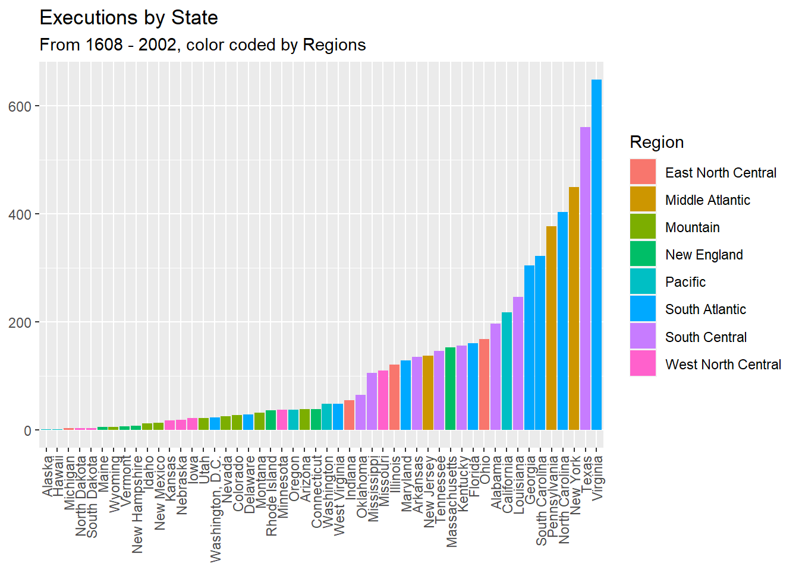
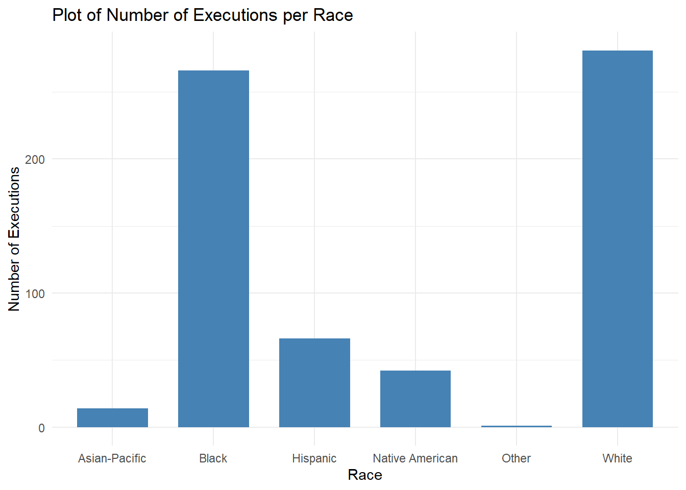
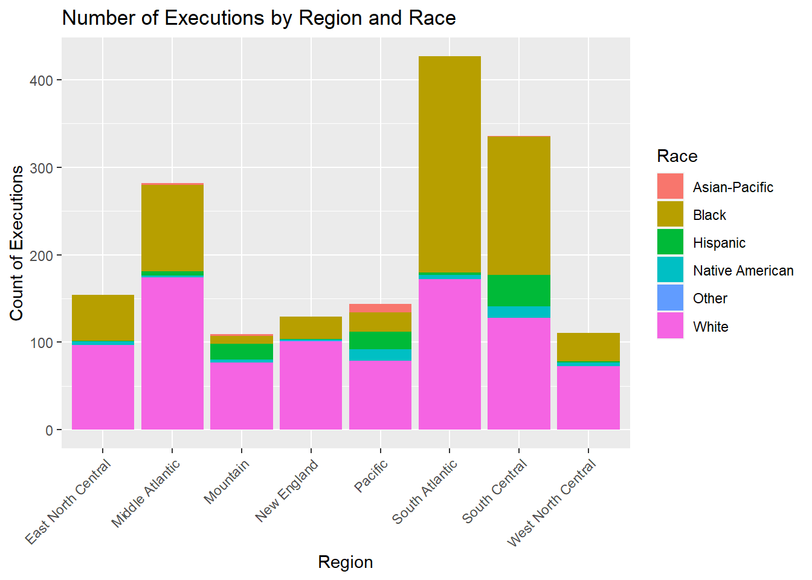
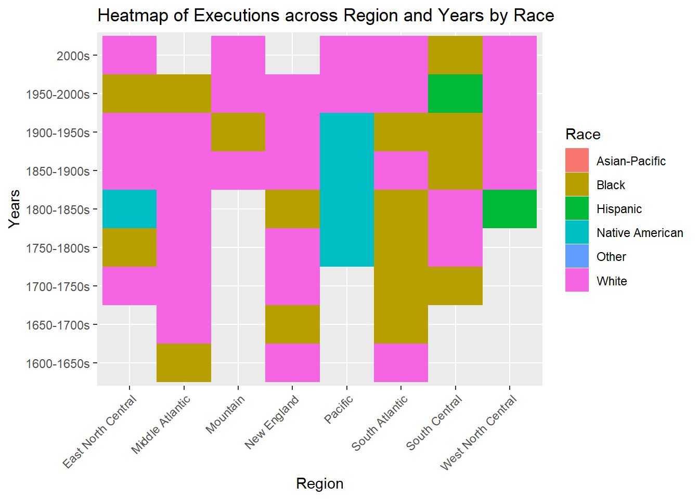
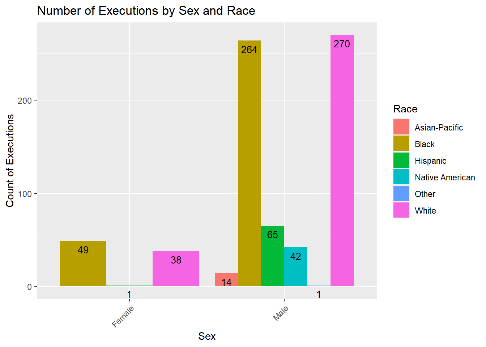
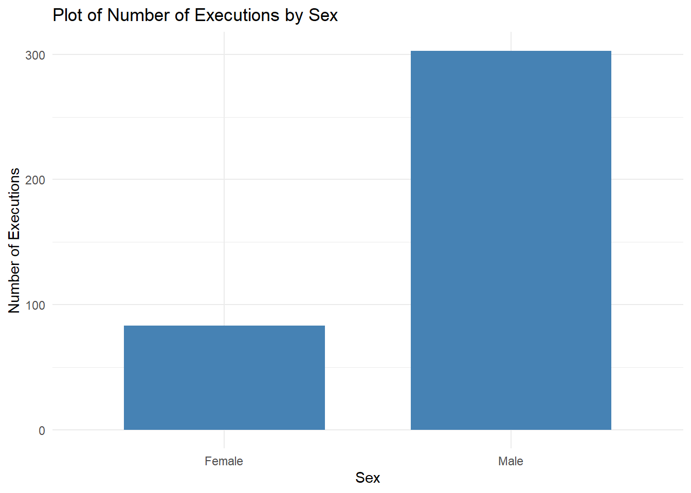
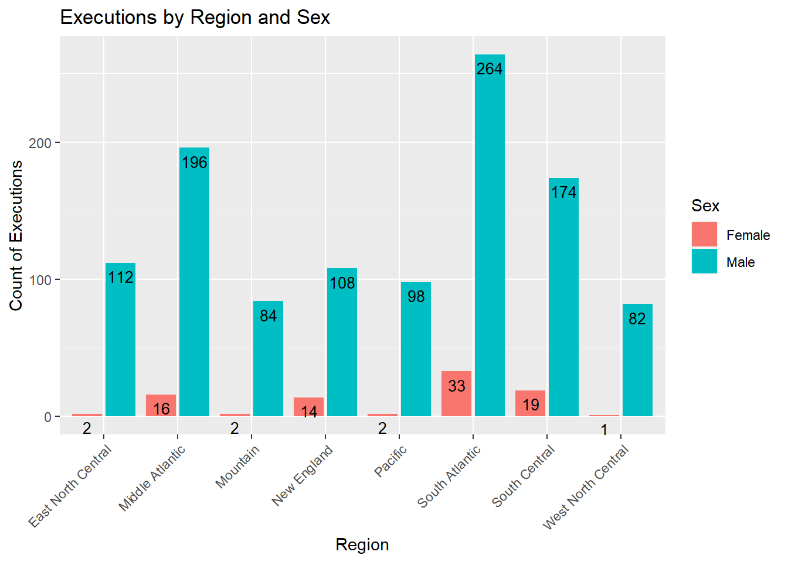
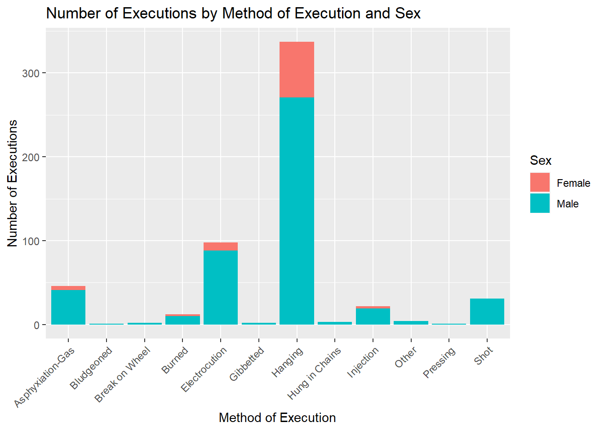
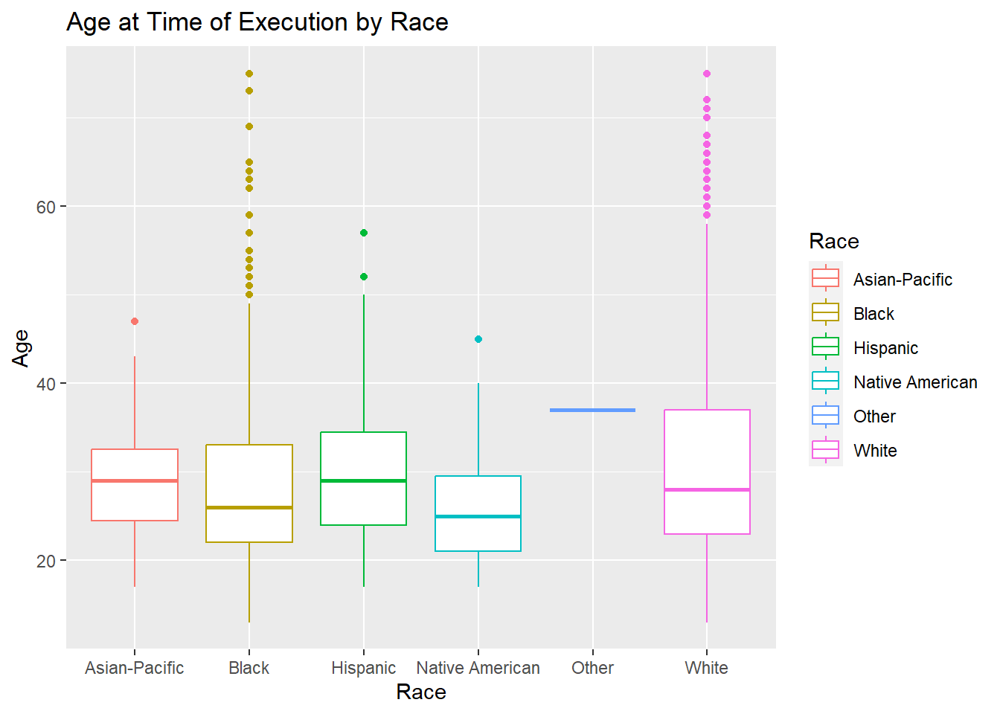
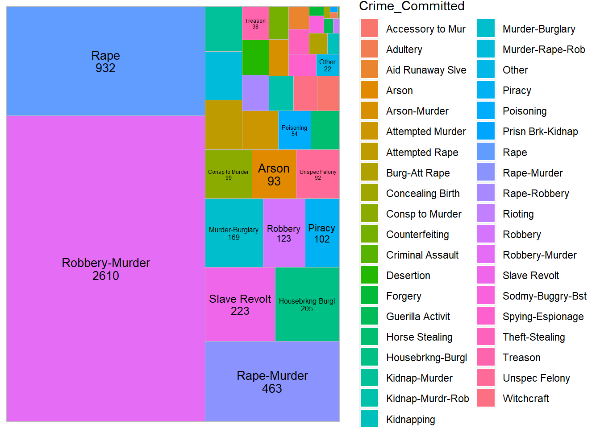

library(tidyverse)
library(ggplot2)
library(readr)
library(dplyr)
library(plotly)
library(treemapify)
knitr::opts_chunk$set(echo = TRUE, warning=FALSE, message=FALSE)DACSS 601 Final Project
Introduction
Capital Punishment has been a debate in the USA for a long time, dating back to the colonial period. As of April 2022, capital punishment is legal penalty in 27 states, and within the federal government and military justice system. Many organisations have actively monitored this debate , often by asking citizens of America whether they are in the favor of death penalty for a person convicted in murder. Throughout the years, the response has been almost 50-50 for and against.
Through this project, I wanted to understand the historical trends of capital punishment and whether it was rooted in any kind of bias - especially racially or on the basis of sex of a person. I think these patterns and trends would provide historical and cultural context to this highly controversial debate. The hope of this project is also that the people reading this would be able to look at the data and graphs and form an opinion on this debate.
Libraries Used
About the Data
I chose to work on the Executions in the United States, 1608-2002: The ESPY File (ICPSR 8451) data files. It is a collection of death penalties ranging from the year 1608 to 2002 that were performed under civil authority in the US. The dataset contains various attributes like age, sex, race, occupation, crime committed and execution method of an offender. There are 15,000 such records in the dataset.
Load Data
raw_data <- read.csv("_data/CapitalPunishmentsUSA.tsv", sep = "\t")
summary(raw_data) V1 V2 V3 V4 V5
Min. :8451 Min. :4 Min. :1 Min. : 10001 Min. :1.000
1st Qu.:8451 1st Qu.:4 1st Qu.:1 1st Qu.:130939 1st Qu.:1.000
Median :8451 Median :4 Median :1 Median :340360 Median :2.000
Mean :8451 Mean :4 Mean :1 Mean :298514 Mean :1.682
3rd Qu.:8451 3rd Qu.:4 3rd Qu.:1 3rd Qu.:440009 3rd Qu.:2.000
Max. :8451 Max. :4 Max. :1 Max. :560023 Max. :6.000
NA's :710
V6 V7 V8 V9
Min. :12.00 Length:15268 Min. :1.000 Min. :1.00
1st Qu.:23.00 Class :character 1st Qu.:2.000 1st Qu.:2.00
Median :29.00 Mode :character Median :2.000 Median :2.00
Mean :31.45 Mean :2.413 Mean :2.38
3rd Qu.:38.00 3rd Qu.:3.000 3rd Qu.:2.00
Max. :83.00 Max. :4.000 Max. :6.00
NA's :7957 NA's :4 NA's :5
V10 V11 V12 V13
Min. : 1.000 Min. : 1.000 Min. : 1.00 Min. : 1.000
1st Qu.: 1.000 1st Qu.: 1.000 1st Qu.: 8.00 1st Qu.: 3.000
Median : 1.000 Median : 1.000 Median :16.00 Median : 6.000
Mean : 5.428 Mean : 1.639 Mean :15.82 Mean : 6.291
3rd Qu.:10.000 3rd Qu.: 2.000 3rd Qu.:23.00 3rd Qu.: 9.000
Max. :44.000 Max. :15.000 Max. :31.00 Max. :21.000
NA's :436 NA's :43 NA's :876 NA's :562
V14 V15 V16 V17
Min. :1608 Min. : 1.000 Min. : 1.00 Min. : 1000
1st Qu.:1862 1st Qu.: 1.000 1st Qu.:13.00 1st Qu.:13303
Median :1905 Median : 1.000 Median :34.00 Median :34041
Mean :1892 Mean : 1.546 Mean :29.82 Mean :29915
3rd Qu.:1935 3rd Qu.: 1.000 3rd Qu.:44.00 3rd Qu.:44005
Max. :2002 Max. :39.000 Max. :56.00 Max. :56043
NA's :468
V18 V19 V20 V21
Min. : 1.00 Min. :1.000 Min. :1 Min. : 1.0
1st Qu.:24.00 1st Qu.:1.000 1st Qu.:1 1st Qu.:237.0
Median :43.00 Median :1.000 Median :1 Median :390.0
Mean :39.03 Mean :1.024 Mean :1 Mean :407.5
3rd Qu.:49.00 3rd Qu.:1.000 3rd Qu.:1 3rd Qu.:610.0
Max. :82.00 Max. :2.000 Max. :1 Max. :905.0
NA's :154 NA's :14972 NA's :7713 The original, raw form of the data has 21 attributes named like V1, V2…V21. Each column (other than the name column) is a range of numerical values (codes) whose meaning are defined in the pdf that comes with the data.
Data Preparation and Cleaning
For the purpose of this project, I will be making use of the following columns for my analysis:
- Race
- Age
- Crime committed
- Jurisdiction
- Method of Execution
- Year
- Sex
- State of Execution
data <- raw_data[,c("V5", "V6", "V7", "V9", "V10", "V11", "V14", "V16", "V19", "V21")]
data <- data %>%
rename("race_code" = "V5",
"Age" = "V6",
"Name" = "V7",
"jurisdiction_code" = "V9",
"crime_code" = "V10",
"method_code"= "V11",
"Year" = "V14",
"state_code" = "V16",
"sex_code" = "V19",
"Occupation" = "V21")
summary(data) race_code Age Name jurisdiction_code
Min. :1.000 Min. :12.00 Length:15268 Min. :1.00
1st Qu.:1.000 1st Qu.:23.00 Class :character 1st Qu.:2.00
Median :2.000 Median :29.00 Mode :character Median :2.00
Mean :1.682 Mean :31.45 Mean :2.38
3rd Qu.:2.000 3rd Qu.:38.00 3rd Qu.:2.00
Max. :6.000 Max. :83.00 Max. :6.00
NA's :710 NA's :7957 NA's :5
crime_code method_code Year state_code
Min. : 1.000 Min. : 1.000 Min. :1608 Min. : 1.00
1st Qu.: 1.000 1st Qu.: 1.000 1st Qu.:1862 1st Qu.:13.00
Median : 1.000 Median : 1.000 Median :1905 Median :34.00
Mean : 5.428 Mean : 1.639 Mean :1892 Mean :29.82
3rd Qu.:10.000 3rd Qu.: 2.000 3rd Qu.:1935 3rd Qu.:44.00
Max. :44.000 Max. :15.000 Max. :2002 Max. :56.00
NA's :436 NA's :43
sex_code Occupation
Min. :1.000 Min. : 1.0
1st Qu.:1.000 1st Qu.:237.0
Median :1.000 Median :390.0
Mean :1.024 Mean :407.5
3rd Qu.:1.000 3rd Qu.:610.0
Max. :2.000 Max. :905.0
NA's :154 NA's :7713 head(data) race_code Age Name jurisdiction_code crime_code method_code
1 1 NA NORMAN ELI 4 1 1
2 1 NA WOODS JOHN 6 44 4
3 2 NA GAMARRA CHARLES 2 13 1
4 2 NA DESAYAS VICTORIANO 2 1 1
5 2 NA NOREAGO FRANCISCO 2 1 1
6 1 60 DAVIS THOMAS 2 39 1
Year state_code sex_code Occupation
1 1812 1 1 250
2 1814 1 1 616
3 1820 1 1 NA
4 1820 1 1 NA
5 1822 1 1 187
6 1822 1 1 218After taking the subset of the above useful columns, I mapped all codes in each column to their meanings.
race_code <- c(0,1,2,3,4,5,6)
Race <- c("NA", "White", "Black", "Native American", "Asian-Pacific", "Hispanic", "Other")
race_map <- data.frame(race_code, Race)
df3 <- merge(data, race_map)
sex_code <- c(0,1,2)
Sex <- c("Uknown", "Male", "Female")
sex_map <- data.frame(sex_code, Sex)
df3 <- merge(df3, sex_map)
jurisdiction_code <- c(0,1,2,3,4,5,6)
Jurisdiction_of_Execution <- c("DoNotKnow", "Local-Colonial", "State", "Federal", "Territorial", "Indian Tribunal", "Other")
jur_map <- data.frame(jurisdiction_code, Jurisdiction_of_Execution)
df3 <- merge(df3, jur_map)
crime_code <- read.csv("_data/crime_map.csv")
df3 <- merge(df3, crime_code)
method_map <- read.csv("_data/method_map.csv")
df3 <- merge(df3, method_map)
state_map <- read.csv("_data/state_map.csv")
df3 <- merge(df3, state_map)
data <- subset(df3, select=-c(1:6))
head(data) Age Name Year Occupation Race Sex Jurisdiction_of_Execution
1 NA OWENS FRANK 1926 308 Black Male State
2 NA TAYLOR DOSS 1907 236 Black Male State
3 NA MOSES 1827 610 Black Male State
4 NA MCCREA MIKE 1896 NA Black Male State
5 21 TOMLIN LEWIS 1869 259 Black Male State
6 NA MORTON WILL 1921 NA Black Male State
Crime_Committed X Method_of_Execution State_of_Execution
1 Robbery Hanging Alabama
2 Rape Hanging Alabama
3 Rape Hanging Alabama
4 Robbery-Murder Hanging Alabama
5 Robbery-Murder Hanging Alabama
6 Robbery Hanging AlabamaHaving all states of the USA clutter the visualizations, hence, I am grouping them into 8 regions that are often used to define the regions of the USA. The regions are as follows:
- Pacific: “Alaska”, “California”, “Hawaii”, “Oregon”, “Washington”
- Mountain: “Arizona”, “Colorado”, “Idaho”, “Montana”, “Nevada”, “New Mexico”, “Utah”, “Wyoming”
- New England: “Connecticut”, “Maine”, “Massachusetts”, “New Hampshire”, “Rhode Island”, “Vermont”
- East North Central: “Illinois”, “Indiana”, “Michigan”, “Ohio”, “Wisconsin”
- West North Central: “Iowa”, “Kansas”, “Minnesota”, “Missouri”, “Nebraska”, “North Dakota”, “South Dakota”
- South Central: “Alabama”, “Kentucky”, “Mississippi”, “Tennessee”, “Arkansas”, “Louisiana”, “Oklahoma”, “Texas”
- Middle Atlantic: “New Jersey”, “New York”, “Pennsylvania”
- South Atlantic: “Delaware”, “Florida”, “Georgia”, “Maryland”, “North Carolina”, “South Carolina”, “Virginia”, “Washington, D.C.”, “West Virginia”
data$Region <- ifelse(data$State_of_Execution %in% c("Illinois", "Indiana", "Michigan", "Ohio", "Wisconsin"), "East North Central",
ifelse(data$State_of_Execution %in% c("Alabama", "Kentucky", "Mississippi", "Tennessee", "Arkansas", "Louisiana", "Oklahoma", "Texas"), "South Central",
ifelse(data$State_of_Execution %in% c("New Jersey", "New York", "Pennsylvania"), "Middle Atlantic",
ifelse(data$State_of_Execution %in% c("Arizona", "Colorado", "Idaho", "Montana", "Nevada", "New Mexico", "Utah", "Wyoming"), "Mountain",
ifelse(data$State_of_Execution %in% c("Connecticut", "Maine", "Massachusetts", "New Hampshire", "Rhode Island", "Vermont"), "New England",
ifelse(data$State_of_Execution %in% c("Alaska", "California", "Hawaii", "Oregon", "Washington"), "Pacific",
ifelse(data$State_of_Execution %in% c("Delaware", "Florida", "Georgia", "Maryland", "North Carolina", "South Carolina", "Virginia", "Washington, D.C.", "West Virginia"), "South Atlantic",
ifelse(data$State_of_Execution %in% c("Iowa", "Kansas", "Minnesota", "Missouri", "Nebraska", "North Dakota", "South Dakota"), "West North Central",
"NA"))))))))Next, since the data spans multiple centuries, to unclutter the graphs, I grouped the records by 50 years. For example: 1600 to 1650, 1650 to 1700 etc.
data$HalfCenturies <- with(data, ifelse(Year < 1650, '1600-1650s',
ifelse(Year >= 1650 & Year <1700, '1650-1700s',
ifelse(Year>=1700 & Year <1750, '1700-1750s',
ifelse(Year>=1750 & Year <1800, '1750-1800s',
ifelse(Year>=1800 & Year<1850, '1800-1850s',
ifelse(Year>=1850 & Year<1900, '1850-1900s',
ifelse(Year>=1900 & Year<1950, '1900-1950s',
ifelse(Year>=1950 & Year<2000, '1950-2000s',
ifelse(Year>=2000, '2000s', "NA")))))))
)))
head(data) Age Name Year Occupation Race Sex Jurisdiction_of_Execution
1 NA OWENS FRANK 1926 308 Black Male State
2 NA TAYLOR DOSS 1907 236 Black Male State
3 NA MOSES 1827 610 Black Male State
4 NA MCCREA MIKE 1896 NA Black Male State
5 21 TOMLIN LEWIS 1869 259 Black Male State
6 NA MORTON WILL 1921 NA Black Male State
Crime_Committed X Method_of_Execution State_of_Execution Region
1 Robbery Hanging Alabama South Central
2 Rape Hanging Alabama South Central
3 Rape Hanging Alabama South Central
4 Robbery-Murder Hanging Alabama South Central
5 Robbery-Murder Hanging Alabama South Central
6 Robbery Hanging Alabama South Central
HalfCenturies
1 1900-1950s
2 1900-1950s
3 1800-1850s
4 1850-1900s
5 1850-1900s
6 1900-1950sVisualizations
This section contains visualizations on the data to reveal interesting trends as well as my observations on them
Executions by State and Regions
I wanted to see how many executions took place in all states by regions across all years using a bar graph. This helps answer the question: how many states performed the most executions, and how many the least or none?
per_state <- data %>%
group_by(State_of_Execution, Region) %>% tally()
summary(per_state) State_of_Execution Region n
Length:50 Length:50 Min. : 1.00
Class :character Class :character 1st Qu.: 19.75
Mode :character Mode :character Median : 44.00
Mean :118.74
3rd Qu.:155.25
Max. :648.00 ggplot(per_state, aes(x = n, y = reorder(State_of_Execution, n), fill = Region)) +
geom_bar(stat = "identity") +
coord_flip() +
theme(axis.title = element_blank(), axis.text.x = element_text(angle = 90, vjust = 0.5, hjust=1)) +
ggtitle("Executions by State",
subtitle = "From 1608 - 2002, color coded by Regions")
Through the above graph, we can see that the state with the most executions performed is Virginia, followed by New York and Texas. Additionally, the South Atlantic, Middle Atlantic, and West North Central regions have higher number of executions. Based on these observations, we could conclude that generally, the number of capital punishment decreases as one moves from east to west.
Visualizations on Race
Next, I have done a few visualizations on race in the hope of finding the answer to the questions:
- Does the historical data reveal any racial bias?
- Have there been any changes to these biases across the years?
Total Number of Executions per Race
per_race <- data %>% group_by(Year, Race, HalfCenturies) %>%
tally()
ggplot(per_race, aes(x=Race))+
geom_bar(stat="count", width=0.7, fill="steelblue")+
labs(title="Plot of Number of Executions per Race",
x="Race", y = "Number of Executions") +
theme_minimal()
From this graph, we can see that the most executions being performed throughout the years are on White and Black inmates, followed by Hispanic and Native American people. Next, I will plot how these executions trend over the years.
Total Number of Executions per Race accross Years
executions_race <-
ggplot(data = per_race, aes(x = Year, y = n)) +
geom_point(aes(color = Race)) +
labs(title = "Number of Executions by Race and Year", x="Year", y="Number of Executions")
ggplotly(executions_race)It can be observed that executions of black and white inmates follows the same trend in general over time. However, in the early 1900s, the number of executions for black inmates seems to be a little higher. Similarly the late 1800s seems to be the time when more executions were for Hispanics - this could be due to the Dakota war of 1860. While Hispanic executions increased in the 2000s.
Total Number of Executions per Race across Regions
per_race_region <- data %>% group_by(Year,Race, Region) %>%
tally()
ggplot(per_race_region, aes(Region, fill = Race)) +
geom_bar(position = "stack") +
labs(y="Count of Executions") +
ggtitle("Number of Executions by Region and Race") +
theme(axis.text.x = element_text(angle = 45, hjust = 1)) 
This graph could reveal if there are any racial biases across regions. We can see that the South Atlantic region, followed by South Central, has the most executions for Black individuals. Additionally, the western regions, like Mountain and Pacific, and South Central carried out more executions on Hispanic, Asian-Pacific Islander, and Native American people.
Executions on Race acorss Regions and Years
rr_vars <- c("Race", "Region", "HalfCenturies")
race_region <- data[rr_vars]
# Base plot
p <- ggplot(race_region, aes(x = Region, y = HalfCenturies, fill = Race)) +
theme(axis.text.x = element_text(angle = 45, hjust = 1)) +
labs(title="Heatmap of Executions across Region and Years by Race",
x="Region", y = "Years")
p + geom_tile()
Mostly, white people have received the capital punishment in all regions across all the years, however, there are some exceptions. For example, it seems that South Atlantic executed Black people the most in the years 1650 to 1850. This same trend was seen in the graph above. Similarly, Native Americans were executed the most in year 1700 to 1850 in the Pacific region. Overall, these 3 races have been executed the most across all regions and years.
Total Number of Executions by Race and Sex
per_race_sex <- data %>% group_by(Year,Race, Sex) %>%
tally()
per_race_sex# A tibble: 744 × 4
# Groups: Year, Race [670]
Year Race Sex n
<int> <chr> <chr> <int>
1 1608 White Male 1
2 1622 White Male 1
3 1624 White Male 1
4 1626 White Male 1
5 1637 White Male 1
6 1638 White Male 4
7 1641 Black Male 1
8 1641 White Male 1
9 1642 White Male 2
10 1643 White Female 1
# … with 734 more rowsggplot(per_race_sex, aes(Sex, fill = Race)) +
geom_bar(position = position_dodge()) +
geom_text(aes(label=after_stat(count)), stat="count", vjust=1.6,
color="black", position = position_dodge(0.9), size=3.5)+
labs(y="Count of Executions") +
ggtitle("Number of Executions by Sex and Race") +
theme(axis.text.x = element_text(angle = 45, hjust = 1)) 
I created the above graph to find out the number of executions by race and sex. It is observed that for both male and female sexual orientations, individuals identifying as White were executed the most. It should be noted that in this dataset, no females belonging to the Native American and Asian Pacific races were not executed.
Visualizations on Gender
In this section, I have done a few visualizations on race in the hope of finding the answer to the questions:
- Are men sentenced to death more often than women?
- Have there been any reversals in this trend?
Total Executions by Sex
per_gender <- data %>% group_by(Year, Sex) %>% tally()
ggplot(per_gender, aes(x=Sex))+
geom_bar(stat="count", width=0.7, fill="steelblue")+
labs(title="Plot of Number of Executions by Sex",
x="Sex", y = "Number of Executions") +
theme_minimal()
It can be seen that more males were executed that females over the years. For further analysis, I visualized the graph below.
Total Executions by Sex across Years
per_gender <- data %>% group_by(Year, Sex) %>% tally()
executions_gender <-
ggplot(data = per_gender, aes(x = Year, y = n)) +
geom_point(aes(color = Sex)) +
labs(title = "Number of Executions by Sex and Year", x="Year", y="Number of Executions")
ggplotly(executions_gender)From this graph, it can be seen that males are in the majority of capital punishment executions. The only time this trend was reversed was during the Salem Witch trials in the 1690s. During this time, a total 0f 14 women were executed while no male was executed.
Total Executions per Sex across Regions
per_sex_region <- data %>% group_by(Year,Sex, Region) %>%
tally()
ggplot(per_sex_region, aes(Region, fill = Sex)) +
geom_bar(position = position_dodge2()) +
geom_text(aes(label=after_stat(count)), stat="count", vjust=1.6,
color="black", position = position_dodge(0.9), size=3.5)+
labs(y="Count of Executions")+
ggtitle("Executions by Region and Sex") +
theme(axis.text.x = element_text(angle = 45, hjust = 1)) 
From the above graph, it can be said that, in general, the ratio of men vs women executions remains the same throughout all regions, except for in the New England region where women seem to be executed more - this is possibly due to the Salem Witch trials. This ratio is also not followed in East and West North Central and Pacific regions where males seem to have been executed much more than females.
Total Executions by Method of Execution and Sex
gender_method <- data %>% group_by(Sex, Method_of_Execution, Year, HalfCenturies) %>% tally()
ggplot(gender_method, aes(Method_of_Execution, fill = Sex)) +
geom_bar(position = "stack") +
labs(title = "Number of Executions by Method of Execution and Sex", x="Method of Execution", y="Number of Executions")+
theme(axis.text.x = element_text(angle = 45, hjust = 1)) 
This graph shows that mostly, both males and females were executed by hanging. The next method used for both the genders was Electrocutions. We can see that many males were also executed by a shot and asphyxiation-gas.
Number of Executions by Method of Execution and Years
method_years <-
ggplot(gender_method, aes(HalfCenturies, fill = Method_of_Execution)) +
geom_bar(position = position_stack())+
geom_text(aes(label=after_stat(count)), stat="count", vjust=1.6,
color="black", position = position_stack(0.9), size=3.5)+
labs(title = "Number of Executions by Method of Execution and Years", x="Years", y="Number of Executions")+
theme(axis.text.x = element_text(angle = 45, hjust = 1))
ggplotly(method_years)I visualized this graph to understand how the methods of executions have changed throughout the years 1600 to 2000. From 1600s to the 1900s, Hanging was the method that was used the most to carry out executions. For a brief period between 1900s to 2000s, Electrocution started becoming the method being used more, closely followed by asphyxiation-gas.In the 1950s, Injection seemed to have been used a lot too.
Age at Time of Execution by Race
The following graph was plotted in an effort to answer the folliwing questions: * What is the average age of individuals at the time of execution? * Is this age consistent across races?
per_age_race <- data[,c("Age", "Race", "Sex")]
per_age_race <- na.omit(per_age_race)
ggplot(per_age_race, aes(x=Race, y=Age)) +
geom_boxplot(aes(color = Race)) +
ggtitle("Age at Time of Execution by Race")
Through the box plot, the median age of execution for Black, Hispanic, and Native American individuals is 25, while for White and Asian-Pacific Island individuals is is higher - 30. There are quite a few outliers for the Black and White box plots.
Crimes leading to Capital Punishment
This graph answers the question: Which crimes have led to the most executions?
crime_count <- data %>% group_by(Crime_Committed) %>%
tally()
crime_count <- na.omit(crime_count)
crime_count <- crime_count[order(-crime_count$n),] %>%
mutate(percent = n / sum(n))
ggplot(crime_count, aes(area = percent, fill = Crime_Committed, label=paste(Crime_Committed, n, sep = "\n"))) +
geom_treemap()+
geom_treemap_text(place="centre", size=10)
The majority executions were a result of murder, specifically related to robbery, followed by rape. This is followed by capital punishments related to slave revolts between 1600 and 2000, which are around 500, approximately 2% of the total punishments. These are indicative of racial bias during these years.
Conclusion
The objective of this project was for me to understand the trend of capital punishments given in the USA across different years. It is my hope that the reader of this project be able to form an opinion on this highly debated topic based on this analysis and visualizations. I based the graphs on race, gender as well as other factors like region, years, method of execution and crimes committed, as well as age. A few implications and insights are that the number of capital punishments tend to decrease post war. This can be seen during the Vietnam War (1955-1975). It seems that war affects the usage of these execution methods.
There were a few more insights that I gained:
- Over the years, methods of execution have become more humane, for example, injection instead of hanging or burning
- The east coast has had the most executions overall and the number reduces as we move west, with California being the exception.